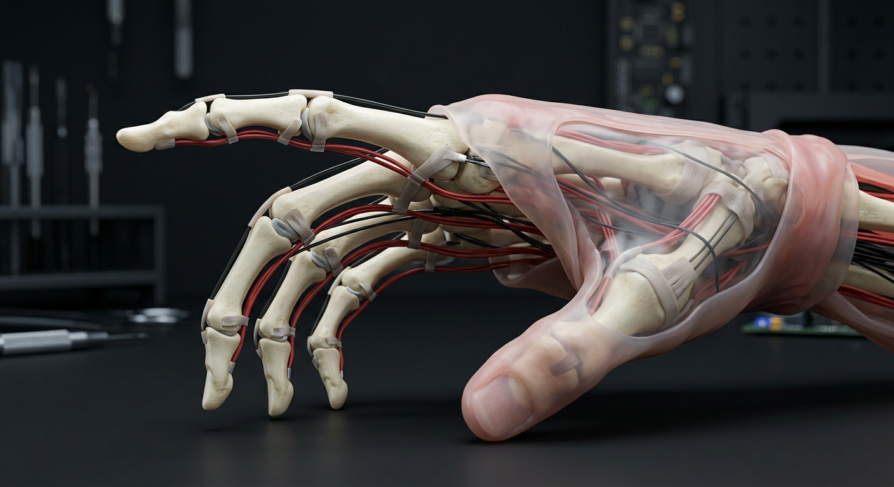

The Future of Humanoid Robotics Starts Here
Takween Robotics is creating artificial humans that approximate human dexterity, anatomy, and functionality through biomimicry, advanced materials, and AI.

ANATOMY MODEL
Tendon-driven hand with capsule-level compliance
14
ACTUATORS
5:1
TENDON
9.7
SENSOR
VISION
Beyond Traditional Humanoid Robots
Today's humanoid robots use simplified mechanical approximations of human anatomy. Takween Robotics is taking a fundamentally different approach.
We are developing artificial humans by recreating the biological principles that make human movement, manipulation, and dexterity possible.
Think less industrial robot and more science-fiction humanoid systems inspired by concepts seen in Westworld or Almost Human.
01
Biological Principles
Movement systems modeled on the structures that make human dexterity possible.
02
Soft Tissue Mechanics
Artificial tissues, joint capsules, and tendon paths built for compliant motion.
03
Human-Like Functionality
A path toward artificial humans that perceive, reason, and manipulate the world.
TECHNOLOGY
Built From Human Anatomy
Our robotic systems are designed from the inside out, drawing inspiration from the structures found in the human body.
27+
HAND DEGREES OF FREEDOM
12
MATERIAL STACK TESTS
4 ms
CONTROL TARGET
Anatomical systems, not simplified mechanisms.
Anatomically inspired skeletal structures
Artificial tendons and ligament systems
Soft tissue and joint capsule replication
Multi-material additive manufacturing
Pressure sensing and tactile perception
AI-powered reasoning and decision-making
CURRENT PROGRESS
Building the Human Hand First
The human hand is one of the most complex and important components of any humanoid robot. We have begun development by focusing on the robotic hand, specifically the index finger.

Current prototypes replicate skeletal bone structures, tendon routing systems, ligament-like support mechanisms, joint capsule functionality, and soft tissue structures beneath the skin.
- Skeletal bone structures
- Tendon routing systems
- Ligament-like support mechanisms
- Joint capsule functionality
- Soft tissue structures beneath the skin
WHY HANDS MATTER
The Ultimate Test of Humanoid Dexterity
Human intelligence is only useful if it can interact with the physical world. The ability to grasp, manipulate tools, feel pressure, perform delicate tasks, and interact naturally with objects depends on highly dexterous hands.
We believe solving the hand is one of the most important challenges in humanoid robotics.
TECHNICAL APPROACH
Hardware Meets Intelligence
Takween combines advanced robotics with modern AI systems, enabling future humanoid systems to perceive, reason, and interact with their environments in increasingly human-like ways.
ROADMAP
What Comes Next
Takween is advancing from anatomically accurate hand systems toward complete artificial human platforms.
01
Anatomically Accurate Robotic Hand
02
Complete Upper Limb System
03
Full Humanoid Body Platform
04
Artificial Human Capabilities at Scale
FOUNDER
Founded by Amr Al-Refae
Takween Robotics was founded by Amr Al-Refae, a technical founder building the company from the ground up. All hardware, software, prototyping, and system development are currently being designed and implemented in-house.
Help Shape the Future of Artificial Humans
Follow our journey as we build the next generation of humanoid robotics.